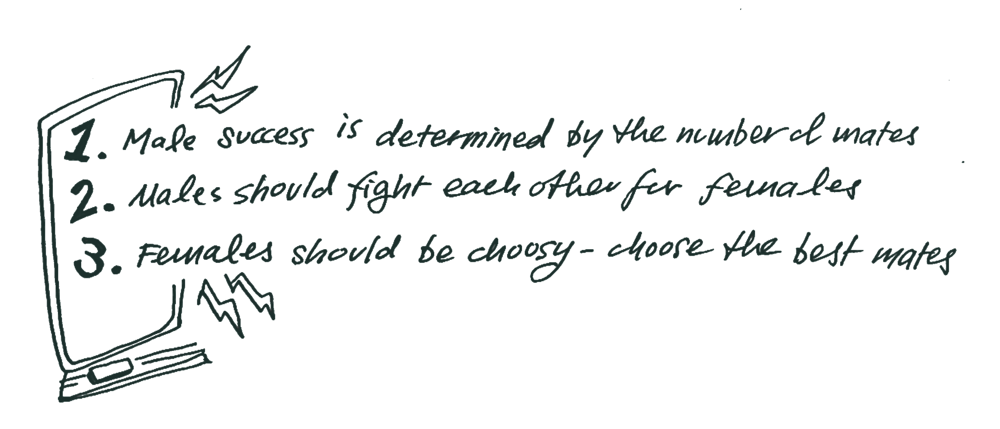

Imagine you’re sitting in biology class, learning about evolution, when this slide pops up:

The professor is going through the traditional thinking behind sexual selection, one of the main forces behind evolution. But you’ve never seen it presented so blatantly like this.
Three points in this list catch your eye:

Spelled out like this, you find these rules strangely familiar—perhaps disturbingly so, to the primary ideology of a specific internet community which has been increasingly prevalent in internet discourse. A group of people who do live by these rules (which are much more nuanced) to their own lives and live by them. A subculture of men online called ‘incels’.
A Look Into How Incels Use Biology
Think of the tail of a peacock. Since the peahen (a female peacock) is attracted to the male’s bright, elaborate feathers, the males with bigger and brighter tails will have more success attracting mates and fathering children, passing down its genes, leading to bigger and brighter tails each generation.
Pellentesque habitant morbi tristique senectus et netus et malesuada fames ac turpis egestas. Vestibulum tortor quam, feugiat vitae, ultricies eget, tempor sit amet, ante. Donec eu libero sit amet quam egestas semper. Aenean ultricies mi vitae est. Mauris placerat eleifend leo.
But you already know this, being that these are the first rules you learn about sexual selection. However, as the professor goes through the list, (especially through rules 4 “Male success is determined by the number of mates”, 5 “Males should fight with each other for access to females” and 6 “Females should be choosy—pick the best males”) you are struck by how obstruse these rules seem written without context, and how easily misinterpreted and misapplied they might be.
This was my experience sitting in my third-year evolution class. Worse, these rules struck me as being very similar to thinking of a specific internet community which has been rising in popularity and in internet discourse in the last decade, a subculture of men online called ‘incels’.
For those who are unfamiliar, incels are an online subculture of predominantly heterosexual men who define themselves as being unable to form or access sexual relationships with women. As a result of their “involuntary celibacy”—which is where the term incel is derived from—these men have an extremely low opinion of themselves and of women. In the past decade, extreme violent attacks perpetrated by incels have brought their misogynistic ideology under heavy scrutiny and examination.
The term wasn’t always intended to be used this way. Incel was in fact coined by a young woman in 1997 who made a blog as a university student to share experiences in celibacy and loneliness, intended for all genders and sexual orientations. It was only in the 2000s when the founder passed off her website when the term was co-opted by a very different demographic.
Incels continue to co-opt to this day—not websites or blogs, but science. At the center of their belief system is a dating conspiracy in which normal people, or “normies” are not aware of. They believe that they suffer as a product of this “reality” because of their inferior genetics, how women are evolutionarily trained, and inequitable social structures.
Incels were primarily active on websites like 4chan and reddit, though today, many of these no longer exist. However, on their Wikipedia, which is available online to this day, incels host a Scientific Blackpill page which lists thousands of legitimate research papers primarily from the field of evolutionary psychology regarding topics in sex, dating and female preferences.
As a biology student, I was curious and concerned. This led me to wonder, how much of incel culture is based in science? What biological concepts were being used, and to what extent?
To find out, I took used a dataset of incel messages on r/incel from 2017. I collected all the messages, removed them of duplicates, cleaned them of punctuation, lowercased the words and separated them, and started counting, with the help of a computer.